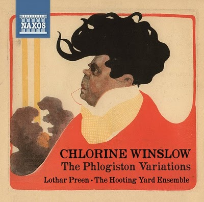

Sunday, February the 20th, 2011
back to: title, date or indexes
That bouffant! That hauteur! It can only be psychopath maestro Lothar Preen!

A rare and wonderful CD cover unearthed at the Pavilion Of Innocent Pastimes. While you are there, take some time to examine the ignorant ornithology archive.